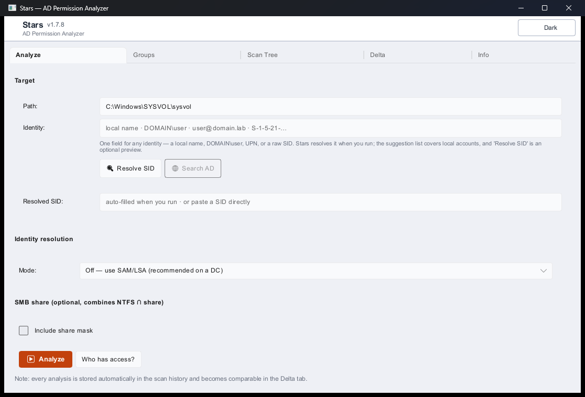

Read-only analysis of Active Directory, NTFS and SMB permissions for Windows — with explainable effective-permission paths. Also known as: Stars - AD Permission Analyser.
Stars is an AGPL-3.0 Windows tool for auditing Active Directory, NTFS and SMB permissions. For any user it shows the effective access rights that actually apply to a folder or share — and, above all, why: through which groups, which ACL entries, which inheritance. For 1 path or 5000 paths alike.

Every result comes with the full chain: identity → group → ACE → normalized right → effective right. No black box.
Windows AccessCheck semantics: stored-order DACL evaluation, Deny precedence, inheritance breaks, generic-rights expansion, NTFS ∩ Share combination.
Handles the implicit owner grant and OWNER RIGHTS ACEs exactly — where many tools over-report the owner's access. Read more.
When something cannot be fully resolved, Stars flags it with a diagnostic marker instead of pretending the result is complete.
Signed LDAP (SASL GSSAPI/Kerberos sign & seal) lets Stars query a hardened Windows Server 2022/2025 DC that enforces LDAP signing — without an LDAPS certificate.
No release will ever write to NTFS, SMB or AD. No agent on target systems. No telemetry, no phone-home.
Download the Windows installer from the releases page (no administrator rights required). The installer is not yet code-signed, so verify the published .sha256 to confirm the file is the exact build GitHub Actions produced — see the integrity-check steps.
Stars is exclusively a read-and-analyze tool. It does not modify any permissions, groups, or AD objects.
User Guide · Audit Criteria · OWNER RIGHTS (S-1-3-4) · Technical Documentation · Known Limitations · Architecture Decision Records